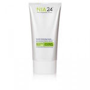

Hi Zack,I hope you've been doing we'll and I'm glad you've found BeloDoc. With your mild acne and sensitive skin the best treatment for you is going to be exfoliation combined with moisturizer. I've included three products listed in order of their importance to your regimen. Use all three products for best results according to the instructions below. If you have any questions, feel free to reach out. |
Nia24 Facial Cleanser - Use this product 2x daily at bed and when you wake up. Apply a nickle sized amount to your face and gently rinse. 
Nia24 Facial Cleanser - Use this product 2x daily at bed and when you wake up. Apply a nickle sized amount to your face and gently rinse. Nia24 Facial Cleanser - Use this product 2x daily at bed and when you wake up. Apply a nickle sized amount to your face and gently rinse. |